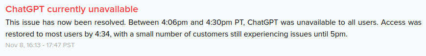
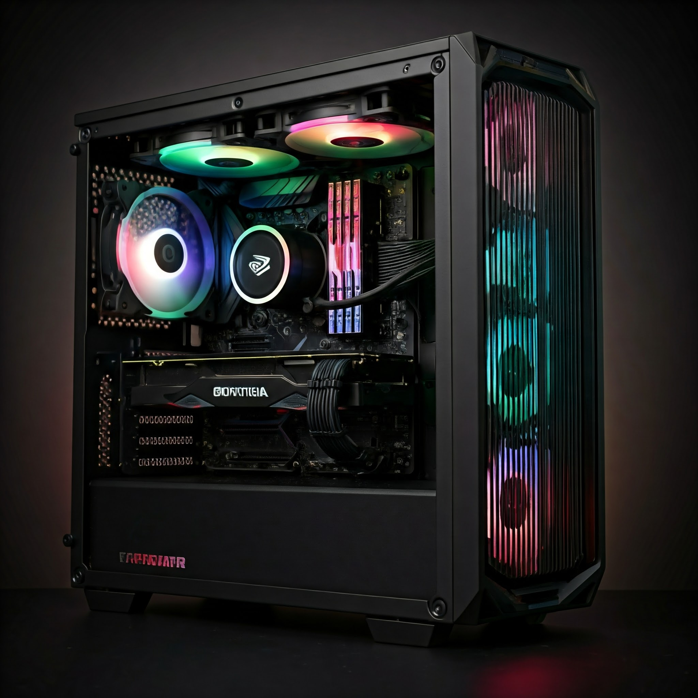
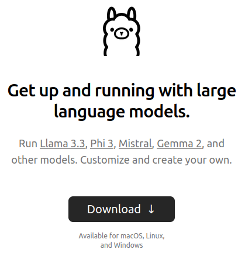
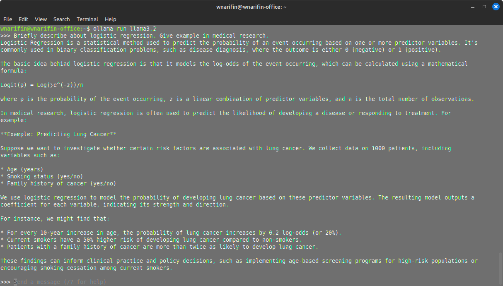
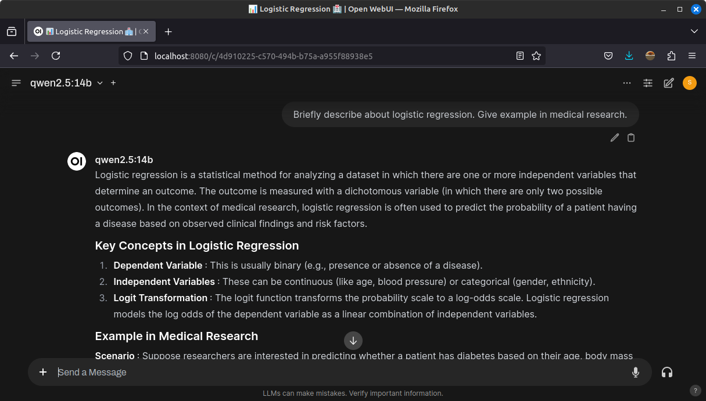
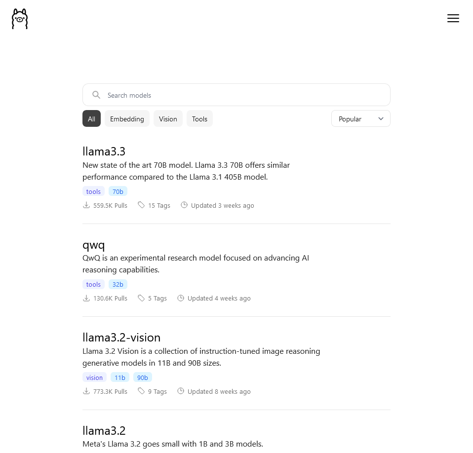
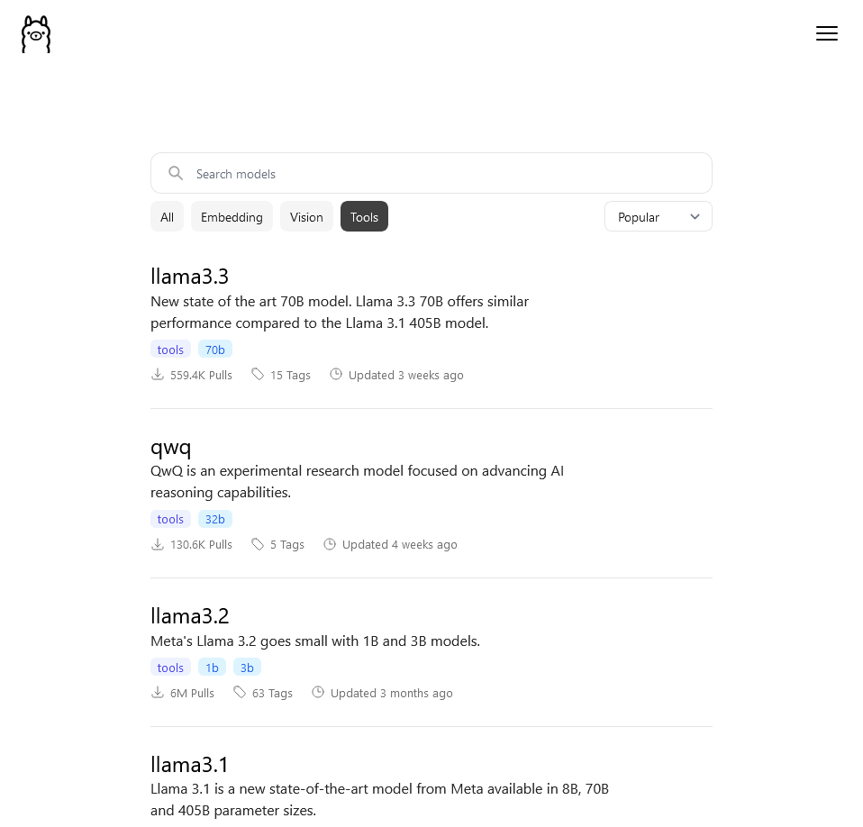
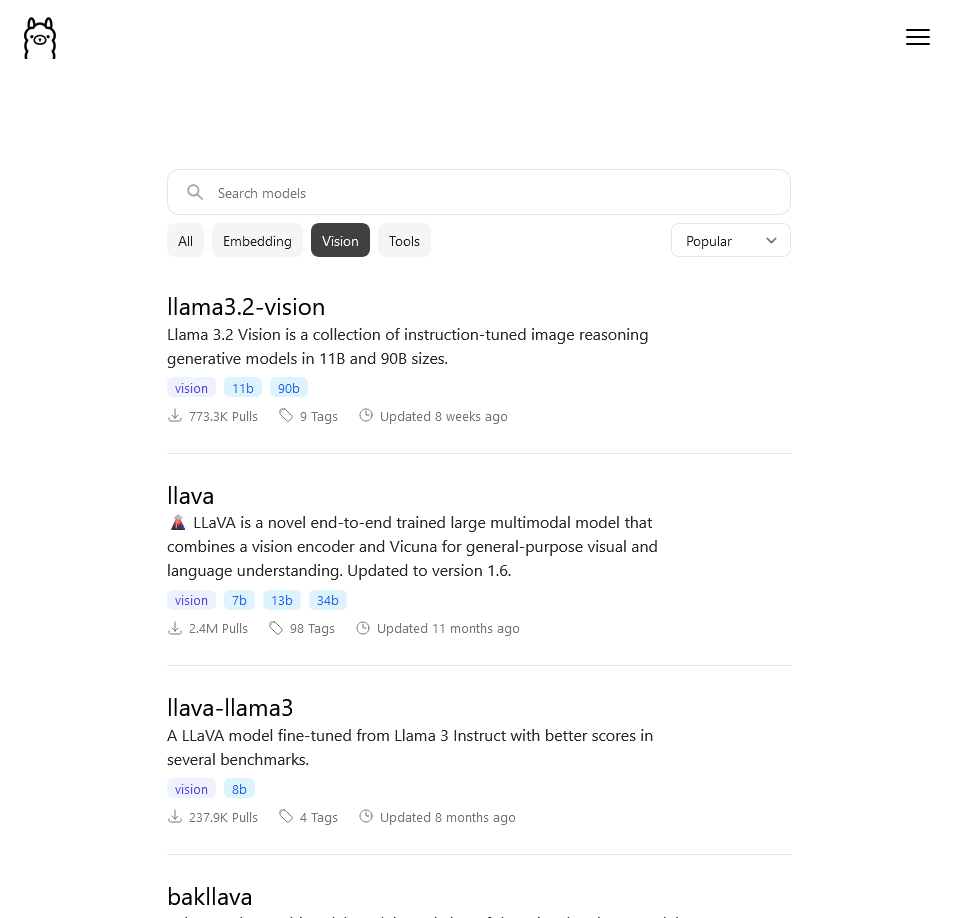
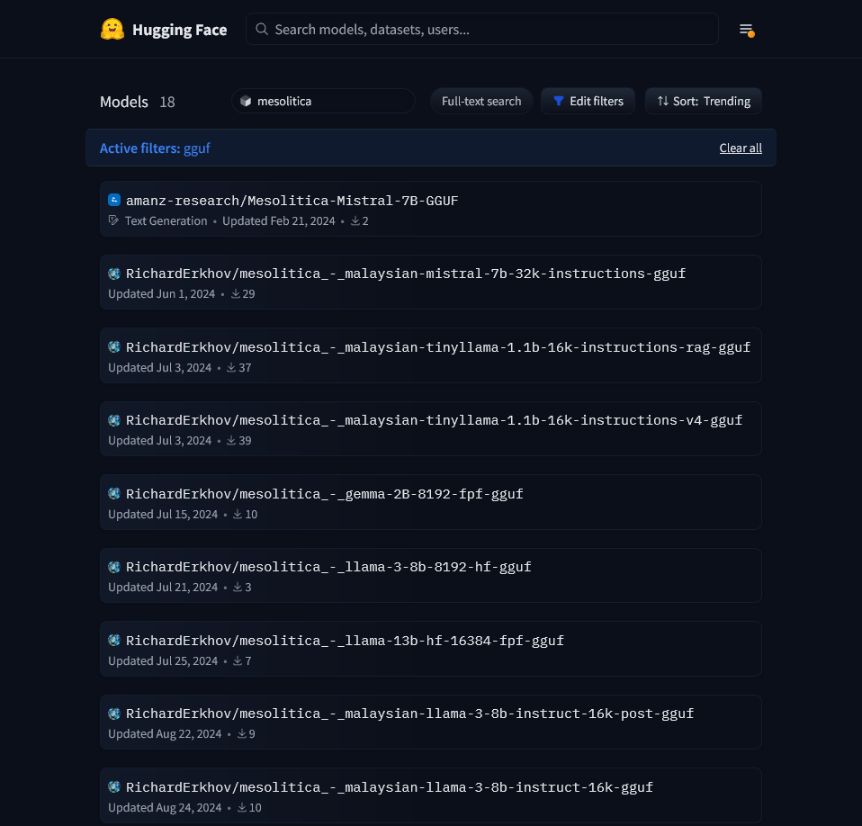
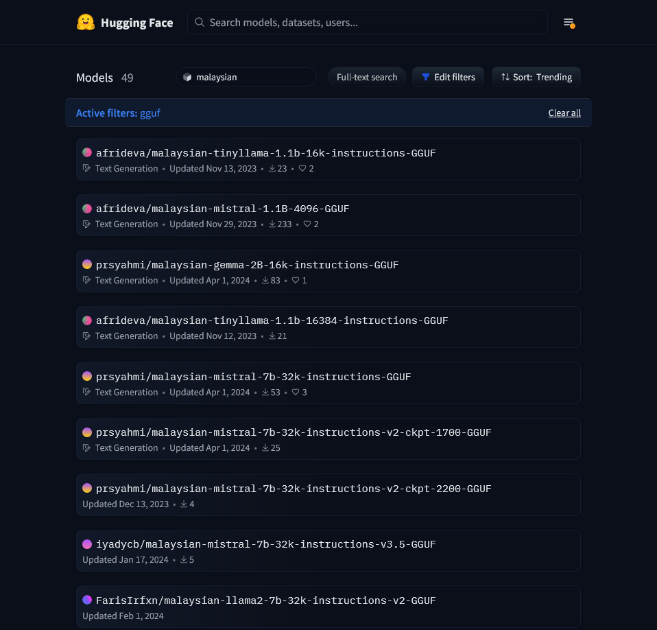

library(rollama)
pull_model("llama3.2")
pull_model("moondream")
pull_model("nomic-embed-text")2 Local Large Language Models
2.1 Introduction
Local large language models (LLMs) “are versions of these powerful language models that run directly on a user’s device or local network, rather than in the cloud” ("Unleashing the Power of Local LLMs", 2024). With the availability of relatively powerful consumer-grade GPUs with reasonably sized VRAM, we can run many open-weight LLM models locally. We will go through the reasons, requirements and options of running LLMs locally, and how to run it in R.
2.2 Reasons of Using Local LLMs
2.2.1 Exhibits
These are some of my main concerns about relying too much on any LLM services online, which can be illustrated clearly in these two pictures:

2.2.2 Advantages
Local LLMs offer five key advantages ("Unleashing the Power of Local LLMs", 2024) that make them a compelling choice for various applications.
Privacy is a major benefit, as these models process data entirely on your device, ensuring that sensitive information never leaves your control. Additionally, local LLMs provide reduced latency and offline functionality, making them ideal for scenarios where internet connectivity is unreliable or unnecessary. Without the need for constant cloud computing, users can enjoy faster response times and leverage AI capabilities even when disconnected from the web.
Using local LLMs is also cost-effective, as it eliminates ongoing expenses associated with cloud services, particularly for heavy users. Lastly, local deployment allows for greater customization, enabling fine-tuning of models to specific domains or use cases to meet precise needs.
2.2.3 Personal reasons
Privacy: As a university lecturer, some tasks are sensitive in nature, such as writing exam questions, brainstorming novel ideas, and drafting top-secret research. Therefore, privacy is crucial. Local LLMs ensure that all data remains on my device, keeping the data private.
No Downtime: With local LLMs, I can work with them as long as my PC is running. I can work even if the internet goes down. This reliability ensures that I can focus entirely on my work.
Experimentation: As a researcher, I love the freedom to experiment and iterate freely. Local LLMs provide this flexibility by allowing me to experiment with different models and explore different settings without worrying about whether I have reached my token limit of the day! As of today, local LLMs offer so much, and it is exciting to explore what they can do.
2.3 Using Local LLMs
2.3.1 Hardware Requirements
For starter, you’ll need a gaming-specs PC/Laptop with an NVIDIA GPU.
As a disclaimer, I am not affiliated with NVIDIA, although I specifically mention NVIDIA GPUs here. As we will see later, packages/software for running local LLMs support NVIDIA GPUs, while the support for other GPUs may vary.

And, of course, it is cool to have this one (i.e. a gaming PC) sitting on your desk for the sake of research. Admittedly, this is a gaming-specs PC, so it’s up to you what you want to do with it.
2.3.2 Options for Running Local LLMs
There are many options to run local LLMs, some of them are:
- Ollama (https://ollama.com/)
- Ollama + Open WebUI (https://openwebui.com/)
- Msty (https://msty.app/)
- LM Studio (https://lmstudio.ai/)
- GPT4All (https://www.nomic.ai/gpt4all)
- vLLM (https://docs.vllm.ai/)
- llama.cpp (https://github.com/ggerganov/llama.cpp) – essentially the originator of all listed above.
In this book, we will use Ollama as the primary driver for running local LLMs and integrate it with our beloved R.

As it is, Ollama is run in CLI,

For daily use, Ollama is typically combined with a GUI, such as Open WebUI,

2.4 Running Local LLMs in R
2.4.1 Ollama Meets R
There are several options that utilizes Ollama:
-
rollama(https://jbgruber.github.io/rollama/) -
ollamar(https://hauselin.github.io/ollama-r/) -
mall(https://mlverse.github.io/mall/)
There are also several other options that allow tapping into other LLM APIs other than Ollama:
-
gptstudio(https://michelnivard.github.io/gptstudio/) andgpttools(https://jameshwade.github.io/gpttools/) -
tidyllm(https://edubruell.github.io/tidyllm/) -
ellmer(https://github.com/tidyverse/ellmer/)
2.4.2 Getting Started with rollama
In this book, we will mainly rely on rollama package (Gruber & Weber, 2025). To get started, there are three basic preliminary steps:
- Install Ollama https://ollama.com/download (this depends on the OS in your PC)
- Install
rollamapackage in R withinstall.packages("rollama") - Find suitable models in https://ollama.com/search

Available LLM models in Ollama are divided by tasks that they perform:
- Text to Text – Text generation, i.e. text in / text out (a typical LLM)
Examples: Llama (Meta, https://www.llama.com/), Qwen (Alibaba, https://qwenlm.github.io/gemm), DeepSeek (DeepSeek, https://www.deepseek.com/), Gemma (Google, https://ai.google.dev/gemma), Mistral (Mistral AI, https://mistral.ai/) and Phi (Microsoft, https://azure.microsoft.com/en-us/products/phi).

- Image + Text to Text – Vision LM, i.e. image + text in / text out
Examples: LLaVA (https://llava-vl.github.io/), Llama3.2-Vision (Meta, https://www.llama.com/), Moondream (Moondream AI, https://moondream.ai/)and MiniCPM-V (ModelBest, https://modelbest.cn/en).

- Text to Number – Embedding generation, i.e. text in / numerical vector out
Examples: Nomic Embed (Nomic AI https://www.nomic.ai/) and mxbai-embed-large (Mixedbread, https://www.mixedbread.ai/).
2.4.3 Basic rollama Usage
Install models
You can pull models from Ollama with pull_model(). Let’s pull llama3.2, moondream, and nomic-embed-text for starter,
List installed Models
You can list installed models in Ollama,
Query
query() is used when you want to ask a one-off query. The LLM will not remember the previous query.
q = "Describe the history of R programming language"
query(q, "llama3.2")── Answer from llama3.2 ────────────────────────────────────────────────────────The R programming language has a rich and fascinating history that spans over
three decades. Here's an overview:**Early Beginnings (1980s-1990s)**R was first developed in the late 1980s by Ross Ihaka, a statistician at the
University of Auckland, New Zealand. At the time, Ihaka was working on a
statistical package called S-PLUS, which was used for data analysis and
visualization. However, he wanted to create a more efficient and flexible
alternative.**First Release (1993)**Ihaka collaborated with Robert Gentleman, another statistician at Bell Labs
(now part of AT&T), to develop the first version of R. This early version was
called S, but it's now commonly referred to as "S-PLUS" or "S-like." The name
"R" was not used until later.**S-PLUS vs. S**In the mid-1990s, Ihaka and Gentleman decided to create a new language that
would be more efficient and flexible than S-PLUS. They developed R, which was
initially called S-PLUS 2. However, they soon realized that S was not a good
name for their new project, as it was already associated with the competing
software package S-PLUS.**Official Release (1995)**R officially released its first version, version 1.0, in 1995. This release
marked the beginning of R's journey towards becoming the popular statistical
programming language we know today.**Gaining Popularity ( Late 1990s-Early 2000s)**In the late 1990s and early 2000s, R started to gain popularity among
statisticians and data analysts. The first version of R Studio, a graphical
user interface for R, was released in 2008.**Modern Era (Mid-2000s-Present)**The mid-2000s marked the beginning of R's rapid growth in popularity. With the
release of version 2.10 in 2006 and version 3.1 in 2014, R became a widely used
language for data analysis, visualization, and machine learning.**Key Features and Milestones**Some key features that have contributed to R's success include:* **Package management**: The development of packages like CRAN (Comprehensive
R Archive Network) has made it easy for users to install and manage libraries.* **Visualization**: R's extensive range of visualization tools, including
ggplot2 and Shiny, has made data analysis more accessible and user-friendly.* **Machine learning**: R's integration with machine learning algorithms and
packages like caret and dplyr has made it a popular choice for predictive
modeling.**Current Status (2023)**Today, R is widely used in academia, industry, and research institutions around
the world. With over 3 million downloads per month from CRAN, R remains one of
the most popular programming languages for statistical analysis and data
science.R's continued growth and adoption can be attributed to its flexibility,
extensibility, and community-driven development model. The language has a
vibrant ecosystem of users, developers, and contributors who work together to
improve and expand R's capabilities.In summary, R's history is a testament to the power of collaboration and
innovation in software development. From its humble beginnings as S-PLUS to its
current status as a leading statistical programming language, R continues to
evolve and grow, shaping the future of data analysis and science.Chat
chat() is used when you want to ask several consecutive queries. The LLM will remember the previous queries. This is the behaviour of chat LLMs.
q = "Describe the history of R programming language"
chat(q, "llama3.2")── Answer from llama3.2 ────────────────────────────────────────────────────────The R programming language was created in the mid-1990s by Ross Ihaka and
Robert Gentleman at the University of Auckland, New Zealand. At that time,
Ihaka and Gentleman were working on a statistical software package called
S-PLUS (S Plus) for IBM, but they wanted to create a more specialized tool for
data analysis.In 1993, Rohan Jayasuriya joined the team as a postdoctoral researcher, and
together with Ihaka and Gentleman, he began developing a new language that
would eventually become R. The new language was designed to be efficient,
flexible, and easy to use, with a focus on statistical computing.In 1995, Ihaka and Gentleman released the first version of R (version 1.0) as
an open-source software package. The initial goal was to create a replacement
for S-PLUS, but the language quickly gained popularity among statisticians,
data analysts, and researchers worldwide.Over the years, R has undergone numerous revisions, improvements, and
extensions. Some key milestones include:* 1997: Version 2.0 of R was released, introducing significant performance
improvements and new features.* 2001: The CRAN (Comprehensive R Archive Network) was established to maintain
and distribute R, making it easier for users to access the software.* 2005: The first version of RStudio (now called RStudio IDE) was released,
providing a user-friendly interface for writing and editing R code.* 2010: Version 2.10 of R was released, introducing the concept of packages and
the package manager.* 2013: The 3.x series of R was introduced, featuring significant performance
improvements, new features, and improved memory management.Today, R is widely used in academia, industry, and government for data
analysis, machine learning, and statistical modeling. It has become one of the
most popular programming languages among statisticians and researchers, with a
vast and active community contributing to its development.Some notable features that have contributed to R's success include:* Extensive libraries and packages (over 15,000 available)* Strong focus on statistical computing and visualization* Efficient and flexible syntax* Active community of contributors and users* Regular updates and improvementsThroughout its history, R has evolved to meet the changing needs of users,
while maintaining its core principles of simplicity, flexibility, and ease of
use. Its popularity continues to grow, making it a valuable tool for anyone
working with data analysis, statistical modeling, or machine learning.Continue with the chat,
chat("Summarize it", "llama3.2")── Answer from llama3.2 ────────────────────────────────────────────────────────Here's a summary:R programming language was created in the mid-1990s by Ross Ihaka and Robert
Gentleman at the University of Auckland, New Zealand. It started as an
open-source software package called S-PLUS and gained popularity among
statisticians and researchers worldwide.Key milestones include:* 1st version released in 1995* CRAN established in 2001 for maintaining and distributing R* RStudio (now IDE) released in 2005 for a user-friendly interface* 2.10 version released in 2010 introducing packages and package managerToday, R is widely used for data analysis, machine learning, and statistical
modeling, with over 15,000 libraries and packages available. Its popularity has
grown due to its:* Efficient syntax* Strong focus on statistical computing and visualization* Active community of contributors and users* Regular updates and improvementsR continues to evolve while maintaining its core principles, making it a
valuable tool for data analysis, machine learning, and statistical modeling.2.4.4 LLM Model Details
View the details
Important details of LLM models in your Ollama,
list_models() |> names() [1] "name" "model" "modified_at"
[4] "size" "digest" "parent_model"
[7] "format" "family" "families"
[10] "parameter_size" "quantization_level"list_models()[, c("name", "family", "parameter_size", "format", "quantization_level")]2.4.5 Terms to understand
Model size
- It usually described as the number of parameters in billions (B)
- Parameters = weights in deep neural networks
- Larger = better, but heavy to run (massive GPU requirement)
- Smaller = (maybe) not as good, but lighter to run (consumer GPU can run)
- Generally:
- 4B model = GPU 4Gb VRAM
- 8B model = GPU 8Gb VRAM
- 16B model = GPU 16Gb VRAM
Quantization
- It is a technique “to reduce the model’s memory footprint and computational requirements without significantly sacrificing performance”.
- The process reduces the precision of the weights of LLM models.
- Floating points: FP32, FP16; integers: Q2, Q4 (common, default in ollama), Q5, Q6, Q8. in bits, i.e. Q4 is 4-bit integer.
- Quantization allows us to run local LLMs in our consumer grade PC.
- More on quantization at https://huggingface.co/docs/hub/gguf#quantization-types, and this Youtube video by Matt Williams that explains it very well https://youtu.be/K75j8MkwgJ0?si=W3KBSRJPlI0QpMxr.
Context size
- Context window/size is number of tokens (words or sub-words) that can be LLM can receive/produce as input/output. - It is around 3/2 times words in a given text.
- You can try a context size calculator here: https://llmtokencounter.com/
- This Youtube video by Matt Williams really explains the concept very well https://youtu.be/-Lyk7ygQw2E?si=RJwx9Xpl80MIDnuF.
2.4.6 Pulling Additional Models from Huggingface
- Pull GGUF files from https://huggingface.co/models for use in Ollama
- You may find GGUF files for Malaysian LLM models (mostly fine-tuned and developed by mesolitica https://mesolitica.com/)


References
Gruber, J. B., & Weber, M. (2025). Rollama: Communicate with ollama to run large language models locally. Retrieved from https://jbgruber.github.io/rollama/
"Unleashing the Power of Local LLMs". (2024). Unleashing the power of local LLMs: A comprehensive guide. Website. Retrieved from https://localxpose.io/blog/unleashing-the-power-of-local-llms